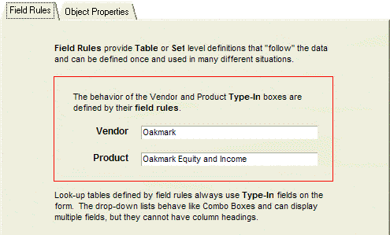
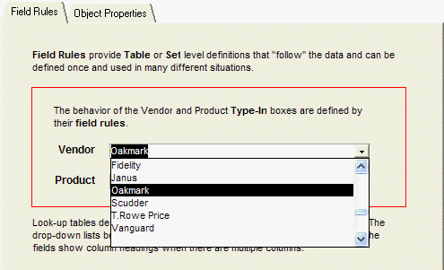
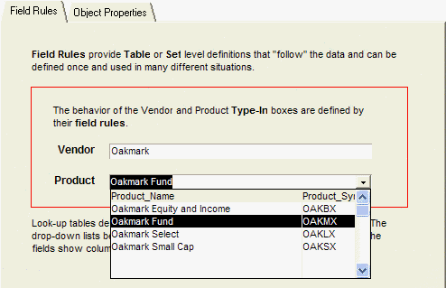

Objects That Do Table Lookups
It is quite common in database application design to present the user with a list of choices. Occasionally, a list is static and hard coded, but often the list is table driven. Sometimes, a list needs to change dynamically, depending on the value of another form object, selection text, or variable. Often the developer will make the list selections more user friendly by presenting an "alias" for an encoded field. This document explores how to develop these types of lists in Alpha Five.
The Table Lookups sample database can be downloaded.

The Table Lookup Form displayed above is based on the Table Lookup, Vendor, and Product tables. The Table Lookup table stores references to data in the Vendor and Product tables. Since these references are numbers, it displays associated name fields from the Vendor and Product tables to make the form more readable and usable.

The Table Lookup table uses Quote_Vendor_No as an index into the Vendor table. It stores the value of Vendor_No in the Quote_Vendor_No field but displays the value of Vendor_Name to represent the data. The Table Lookup table uses Quote_Product_No as an index into the Product table. It stores the value of Product_No in the Quote_Product_No field but displays the value of Product_Name to represent the data.
The objective is to provide something like the following.
Select a vendor from the Vendor list.
Then select a product from the Product list that has been dynamically built in response to the Vendor list selection.


Different Development Approaches
Alpha Five provides two approaches to programming the Quote form's Vendor Name Type-In control to reference one field ( Vendor_No ), display another field ( Vendor_Name ) and store the user selection into a third field ( Quote_Vendor_No ).
Field Rules - by defining a Lookup field rule at the table level.
Object Properties - by defining object properties at the form level.
Advantages and Disadvantages of Field Rules
There are important but subtle differences in the features and benefits between these two different development approaches.
|
Advantages |
Disadvantages |
| Once the lookup is defined, all forms and browses based on the table can use it. | The developer cannot define field rules for variables. |
| When you make a selection from the lookup list, Alpha Five can fill in other fields with related information. | The form cannot display lookup values in a List Box. |
| Can display the data in the lookup table in a browse, drop-down combo box, or in a pop-up window. | |
| Allows editing of records in the lookup table (pop-up style only), and entering of new records in the lookup table. |
Pop-up Lists
Pop-up lists provide a powerful set of capabilities to assist the user when the list is long or has multiple columns. The user has the additional capabilities not available through other controls:
Sort any column with a single click.
Search any column for a value or partial value.
Optionally edit any field value.
Optionally add new field values.
Object Properties
Lists based on object properties offer a wider range of control options. The control options fall into two categories:
List and Combo Boxes - populated by static data provided by the developer or by expressions that dynamically query a table or set.
Record Lists - populated with only the data you need to see. For example, if the list contains 100 items, but you only display 10 at a time, local memory only contains those 10 items.
List and Combo Boxes
|
Advantages |
Disadvantages |
| Easy to implement. | There is a practical limit to number of entries in the list because the values are stored in memory when the list box is populated. |
| Local caching of list contents results in the fastest solution when lists are small and static. | The list presents only one column of data. |
| The developer can add error checking through Xbasic functions. | When you make a selection from the lookup list, Alpha Five does not fill in other fields with related information. |
Record Lists
|
Advantages |
Disadvantages |
| There is no limit to the number of entries in the list. | Record Lists do not support entering or changing values in the list. |
| Record Lists behave like list boxes. | When you make a selection from the lookup list, Alpha Five does not fill in other fields with related information. |
| Support multiple column lists. | |
| The developer can add error checking through Xbasic functions. |
See Also
Using Field Rules for Table Lookups, Using Object Properties for Table Lookups, Using a Coded Lookup Field